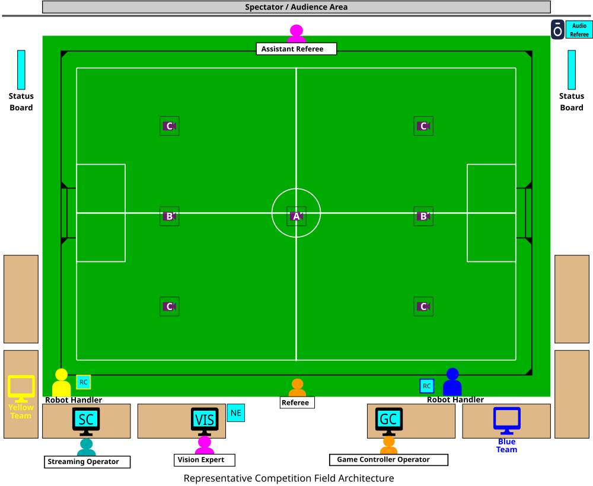
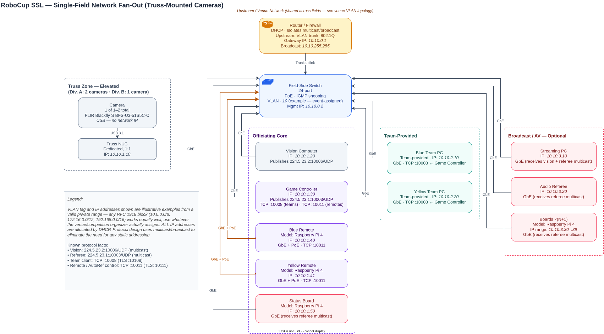
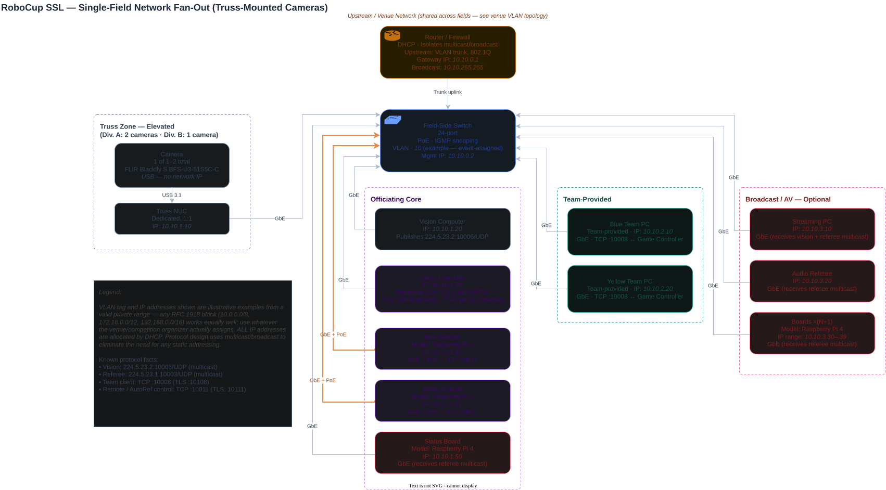
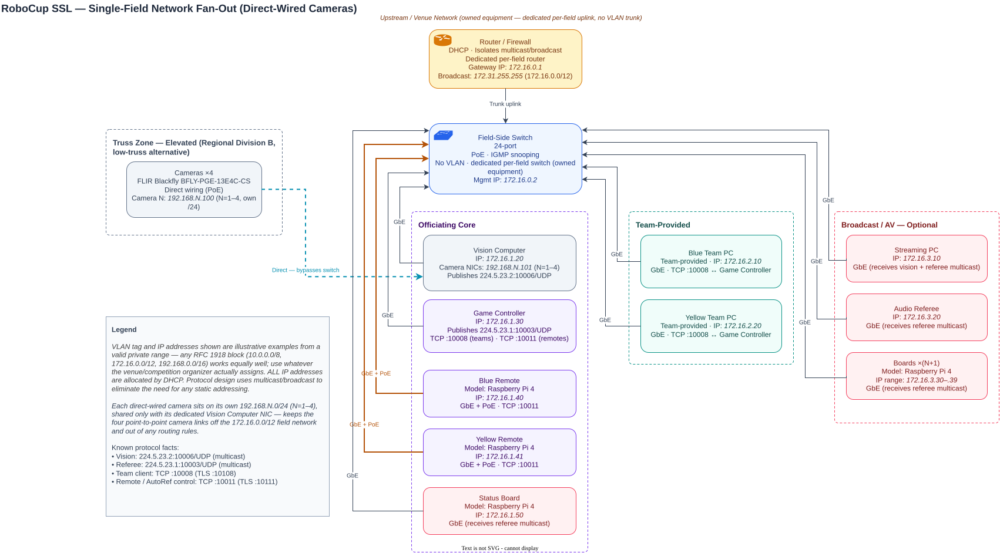
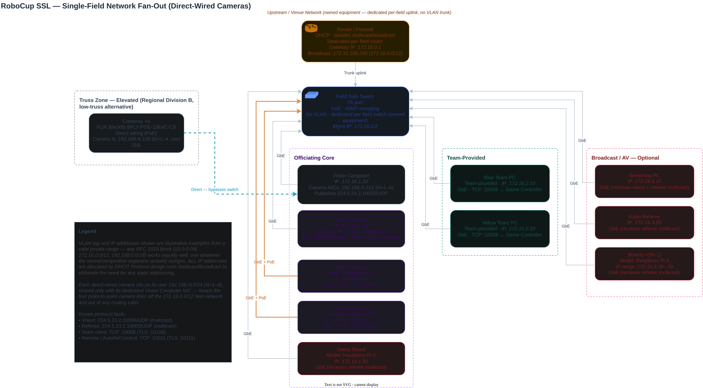

Competition Network¶
This page describes the logical and physical network that runs the fields at the international competition. At the international event, the league typically supports:
1 Division A match field
1-2 Division B match fields
1 Division B practice field
This document will first cover a top level connection diagram, then a physical connection diagram. League protocols that transmit on the network are covered in a separate page.
If you have not already familiarized yourself with the competition layout, please do so first. Also checkout the lab network page for a simpler version of the field network that aligns with lab or regional event single-field deployments.
High Level Overview¶
The competition layout is re-posted here for convenience.

Networking Equipment¶
Every field needs networking equipment to provide key services:
Physical connectivity across all field components
Addresses for computers
Multicast and broadcast support for distributing league traffic
Isolation from other networks and fields
A switch at each field provides physical connectivity to all computers at the field via Gigabit Ethernet. These connections are almost always copper Cat 5e or Cat 6. Switches should only service one field, no cross over.
A router provides the rest of the functionality. The router hosts a DHCP server to dynamically allocate addresses to all machines at the field. It may provide management services for broadcast and multicast as well (e.g. an IGMP quierier). Teams at the field should expect to be able to walk up to an unused cable and receive an IP address. Teams should expect the addresses of field computers and their own computer to change overnight or between matches, as DHCP leases may expire.
The router’s firewall also typically isolates traffic. It will restrict broadcast and multicast to a specific field. It may also be used to prohibit connection to the internet if affects the reliability of a field during a match. Any event that runs multiple fields needs to provide strong partitioning between each field network. Failure to do so results in conflicting vision and referee data and makes isolating offending services very difficult. There are two ways to do this with a router, physical isolation and virtual isolation.
The diagrams below show the options.
Physical Network Core
VLAN Network Core
---
config:
layout: elk
elk:
nodePlacementStrategy: NETWORK_SIMPLEX
---
flowchart TB
Upstream["Upstream / Venue Network"] --> Router["Router / Firewall<br/>DHCP · Isolates Multicast"]
Router --> Switch["Field-Side Switch<br/>PoE · IGMP Snooping"]
Switch --> TrussLink["To Truss Cameras<br/>(previous diagram)"]
Switch --> Endpoints["To Field-Side Devices<br/>(next diagram)"]
classDef amber fill:#fffbeb,stroke:#d97706,color:#78350f;
classDef cyan fill:#ecfeff,stroke:#0891b2,color:#164e63;
classDef gray fill:#f1f5f9,stroke:#64748b,color:#1e293b;
classDef slate fill:#f8fafc,stroke:#475569,color:#0f172a;
class Upstream slate;
class Router amber;
class Switch cyan;
class TrussLink,Endpoints gray;
---
config:
layout: elk
elk:
mergeEdges: false
nodePlacementStrategy: BRANDES_KOEPF
---
flowchart TB
Upstream["Upstream / Venue Network"] --> Router["Router / Firewall<br/>Shared — Per-Venue"]
Router -- "Trunk — 802.1Q Tagged" --> S1["Field 1 Switch<br/>VLAN 10 · Tagged"]
Router -- "Trunk — 802.1Q Tagged" --> S2["Field 2 Switch<br/>VLAN 20 · Tagged"]
Router -- "Trunk — 802.1Q Tagged" --> SN["Field N Switch<br/>VLAN N0+"]
S1 --> Truss1["Truss Cameras"]
S1 --> FS1["Field-Side Devices"]
S2 -.-> Note2["(Same downstream pattern as Field 1)"]
SN -.-> NoteN["(Same downstream pattern as Field 1)"]
classDef amber fill:#fffbeb,stroke:#d97706,color:#78350f;
classDef cyan fill:#ecfeff,stroke:#0891b2,color:#164e63;
classDef gray fill:#f1f5f9,stroke:#64748b,color:#1e293b;
classDef slate fill:#f8fafc,stroke:#475569,color:#0f172a;
class Upstream slate;
class Router amber;
class S1,S2,SN cyan;
class Truss1,FS1,Note2,NoteN gray;
Left, providing a physical router/firewall per field solves the isolation problem by default. Nearly all routers will have default rules in place to disallow broadcast and multicast traffic between the WAN (upstream) and LAN ports. This is the configuration most teams use in their lab, and many regional events use as well. Again, if multiple field switches are connected via the LAN ports, the isolation is broken.
Right, big event competitions will use a more complex configuration. This is mostly the result of a logistics complication; big event spaces will have a dedicated networking contractor/company and this company provides the field networking equipment. It is generally easier for them to provide virtual isolation between fields as a part of the bigger picture that provides networking at the venue to multiple leagues and may utilitze existing infrastructure in the building. The mechanism that provides this isolation is called a VLAN. When this mode of isolation is used, the SSL committees typically have no information or control regarding the backing configuration. Compatible switches combined with a router can tag traffic to specific VLANs and networking equipment is configured to prohibit cross-VLAN communication. A reasonable VLAN configuration would be one VLAN per field, though a networking contractor has never confirmed this for sure at an international event. The router and switches must both support VLAN features for this system to work. When receiving a quote for services from a big contractor, this option is expected to be cheaper than having them provide dedicated equipment.
Cameras¶
There are two paradigms for camera mounting. In both cases the cameras are mounted on a ceiling or truss. The main difference is the location of the computer ingesting raw video data. In most competition configs, small computers are suspended on the truss with the camera. In most lab configs the cameras stand alone on the ceiling (or truss) and the computer is field side. Putting distributed compute on the truss sounds unnecessairly complex and expensive. Why pay for multiple computers? Why force remote access to them? The reason is uncompressed video bandwidth. Machine vision cameras typically don’t compress their video. This means means the data link between the camera and vision computer must reliably transport the full bitrate. Take for example the league camera that have a resolution of 2448 x 2024. This means an image is 5MP. At 12bit (1.5 byte) color depth, and 75 fps. The data rate is 4.45 gbit/s excluding medium line code and error correction code which add additional overhead. As of 2026, carrying multiple 5gbit/s signals more than a few meters is still an expensive proposition. It was even more so when the cameras were purchased in ~2019. 10GbE networking equipment is hundreds to thousands of dollars, and 5 and 10GbE machine vision cameras are relatively new. USB 3.1+ cable extenders are also many hundreds of dollars per extender. This means the cost to buy a small truss computer is about the same as methods to extend high-bitrate signals to the ground reliably. As such, at the time of purchasing the league equipment, the committees concluded the on truss computer was a more reliable option. The league purchased NUCs.
For most lab setups, the length of USB cable needed is short enough, that a USB 3.1+ extender is not needed, just a nice cable. Alternatively, the small field size means 1Gbit PoE is enough to carry the raw video frames, and expensive networking equipment is not needed. As such, competitions run distributed vision systems, with primary processing being on the truss and the field vision computer just providing a human interface for remote access. Most lab configurations have the field side computer run everything, but the cable length and bitrates involved support this simpler cheaper configuration.
Strictly talking about competition configs, the on truss mounting is used for Division A and Division B fields at the international event. Those configurations run 2-camera, 2-NUC and 1-camera, 1-NUC config respectively. Regional events may use the 4-camera direct config for a Division B field if a sufficiently high truss cannot be secured. Limits on optics and distortion force more cameras at lower resolution when truss height is low.
These options are shows in the table below.
Truss NUC — 1–2 Cameras
Direct Wiring — 4 Cameras
flowchart TD
subgraph TrussNuc["Truss — Elevated (1–2 Camera Config)"]
Camera["Camera ×1–2<br/>1 NUC per camera"]
NUC["Truss NUC<br/>Dedicated, 1:1"]
Camera -- "USB 3.1" --> NUC
end
NUC -- "GbE<br/>(via switch, remote access)" --> Switch["Field-Side Switch<br/>(see network core diagram)"]
classDef purple fill:#faf5ff,stroke:#9333ea,color:#581c87;
classDef cyan fill:#ecfeff,stroke:#0891b2,color:#164e63;
class Camera purple;
class NUC,Switch cyan;
flowchart TD
subgraph TrussDirect["Truss — Elevated (4-Camera Config)"]
Cameras["Cameras ×4<br/>Direct wiring"]
end
Cameras -- "Direct — bypasses switch<br/>PoE or USB w/ extenders" --> Vision["Vision Computer<br/>Dedicated interfaces ×4"]
Vision -- "GbE" --> Switch["Field-Side Switch<br/>(see network core diagram)"]
classDef purple fill:#faf5ff,stroke:#9333ea,color:#581c87;
classDef cyan fill:#ecfeff,stroke:#0891b2,color:#164e63;
class Cameras purple;
class Vision,Switch cyan;
Field Side¶
The networking of the remaining computers field side is straightforward. At this point, the complex requirements of isolation and high bitrates are handled. The rest of the system is latency sensitive, but the data rate is so low this is virtually never a problem when using wired connectivity. All equipment is linked via GbE copper to the field-side switch. The remote controls need Power over Ethernet (PoE) for power.
---
config:
layout: elk
elk:
nodePlacementStrategy: NETWORK_SIMPLEX
---
flowchart TD
subgraph Switch["Field-Side Switch (see network core diagram) — IGMP Snooping"]
Note["All Links: GbE · PoE: Remotes Only"]
subgraph Officiating["Officiating Core"]
Vision["Vision Computer"]
GC["Game Controller"]
BR["Blue Remote<br/>GbE · PoE"]
YR["Yellow Remote<br/>GbE · PoE"]
SB["Status Board"]
Vision ~~~ GC ~~~ BR ~~~ YR ~~~ SB
end
subgraph TeamFacing["Team-Provided"]
BT["Blue Team PC"]
YT["Yellow Team PC"]
BT ~~~ YT
end
subgraph Broadcast["Broadcast / AV — Optional"]
Stream["Streaming PC"]
Audio["Audio Referee"]
Boards["Boards ×(N+1)"]
Stream ~~~ Audio ~~~ Boards
end
Note ~~~ Officiating
Note ~~~ TeamFacing
Note ~~~ Broadcast
end
classDef cyan fill:#ecfeff,stroke:#0891b2,color:#164e63;
classDef blue fill:#eff6ff,stroke:#2563eb,color:#1e3a8a;
classDef yellow fill:#fefce8,stroke:#ca8a04,color:#713f12;
classDef orange fill:#fff7ed,stroke:#ea580c,color:#7c2d12;
class Vision,GC,SB,Stream,Boards cyan;
class BR,BT blue;
class YR,YT yellow;
class Audio orange;
style Note fill:none,stroke:none,color:#475569,font-style:italic
style Switch fill:none,stroke:#0891b2,stroke-dasharray:4 3,stroke-width:1.5px
style Officiating fill:none,stroke:#0891b2,stroke-dasharray:3 3,stroke-width:1.5px
style TeamFacing fill:none,stroke:#64748b,stroke-dasharray:3 3,stroke-width:1.5px
style Broadcast fill:none,stroke:#ea580c,stroke-dasharray:3 3,stroke-width:1.5px
Detailed Diagram¶
The below diagrams show near full instantiations of above general archiecture. As noted in the legend of the diagrams, some items like IP addresses and VLANs are examples. In reality IP addresses will be dynamically allocated and will change thoughout the competition. Other such information is noted in the legend box.
Truss NUC Config — Division A / Division B¶


Direct Wiring Config — Regional Division B¶

